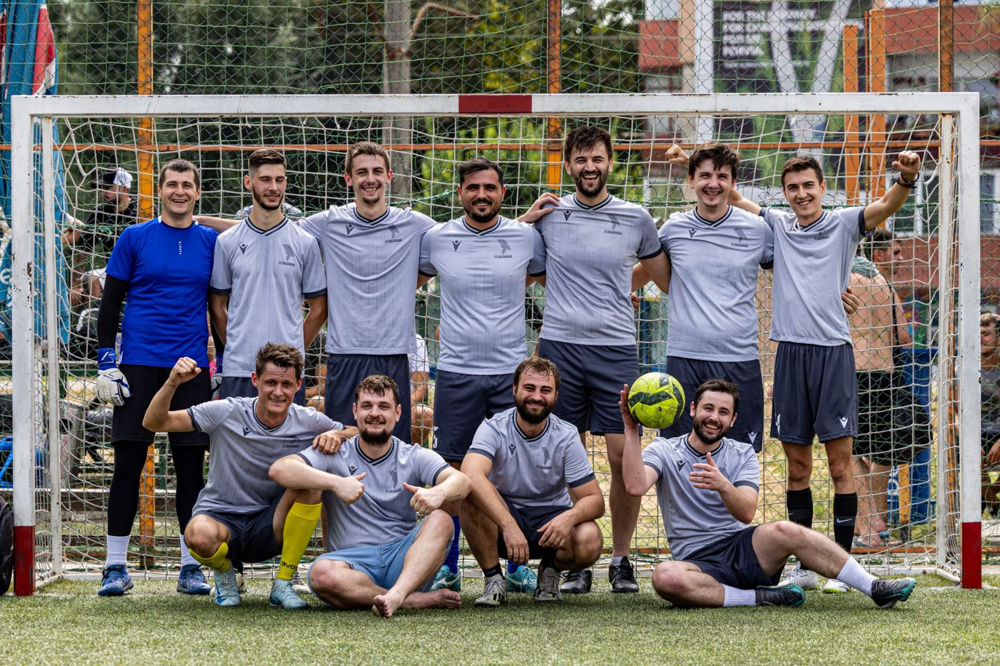

SEZON 2026/2027
FC Basarabia – o echipă de minifotbal formată din basarabeni uniți prin aceeași pasiune: fotbalul! 🇷🇴
Reprezentăm Basarabia cu mândrie pe terenurile din România, prin unitate, respect, ambiție și spirit de echipă. 💙⚽
| # | ECHIPĂ | M | V | E | Î | GM | GP | PCT |
|---|

Ne găsești pe rețelele sociale. Scrie-ne dacă vrei un meci amical, o colaborare sau doar să ne susții la următorul meci din Liga III-B.
Fii parte din familia FC BasarabiaIntră în grup, votează favoritul din joc și vino să ne susții pe teren.Vreau în grupUltima actualizare: 14 octombrie 2026
Acest site aparține echipei de minifotbal FC Basarabia (Liga III-B, Alborz Minifotbal Timiș) și are rol informativ: prezintă lotul, meciurile, clasamentul și imagini ale echipei.
Pe site apar numele jucătorilor și ale staff-ului, pozele acestora, pozițiile pe teren și golurile marcate. Datele sportive (clasament, program, rezultate) provin din paginile publice ale ligii, alborzminifotbal.ro. Pozele și numele sunt publicate cu acordul persoanelor respective.
Site-ul nu are conturi, formulare, comentarii sau newsletter. Nu folosim instrumente de analiză a vizitelor, reclame sau cookies proprii și nu colectăm date personale ale vizitatorilor.
Fonturile site-ului se încarcă de la Google Fonts, iar pagina este găzduită pe GitHub Pages. Când deschizi site-ul, aceste servicii pot primi adresa ta IP și date tehnice ale browserului, conform politicilor proprii. Linkurile către Facebook, Instagram, YouTube și WhatsApp te duc pe platforme externe, cu propriile reguli de confidențialitate.
Dacă apari pe site și vrei să îți fie modificate sau șterse numele ori pozele, ne poți scrie la fcbasarabia@gmail.com sau printr-un mesaj pe paginile noastre de Facebook sau Instagram. Rezolvăm cererea cât mai repede.